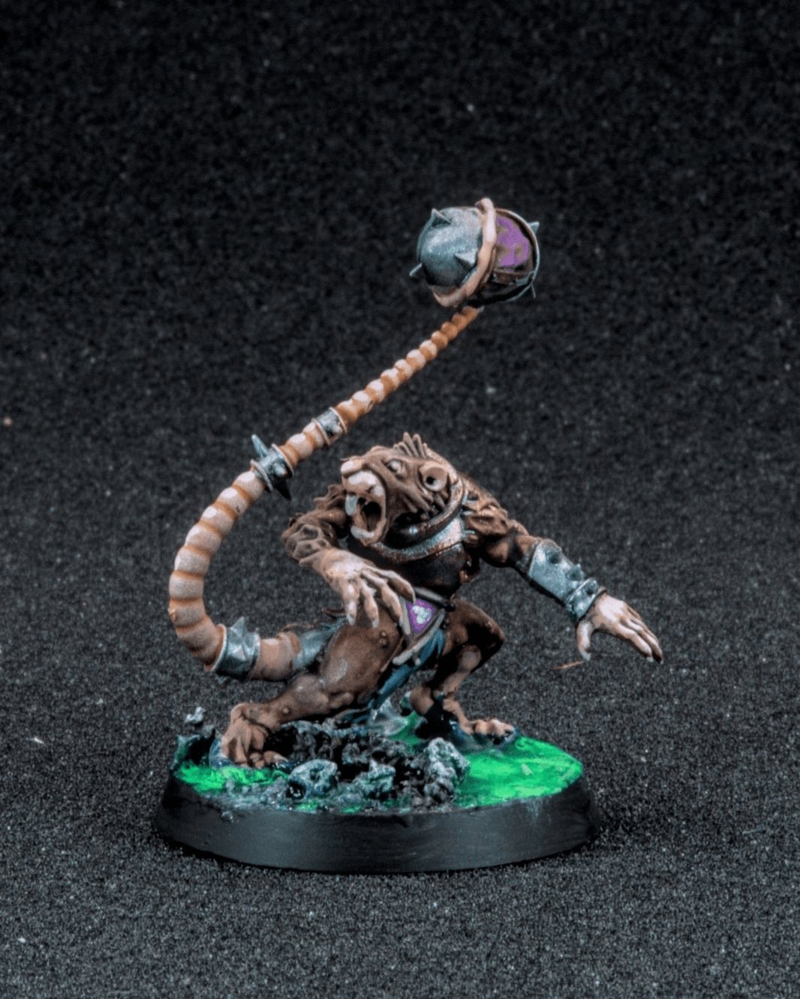
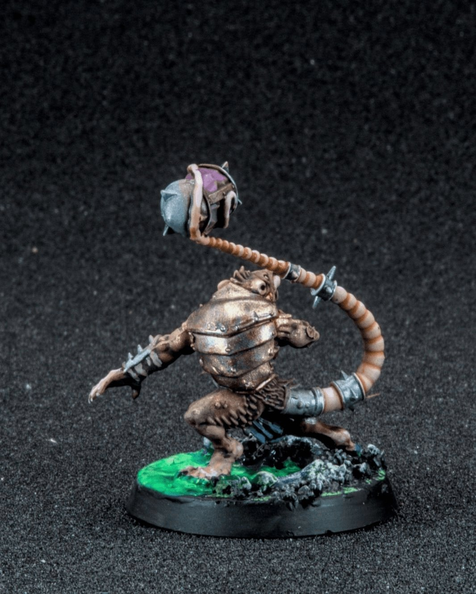
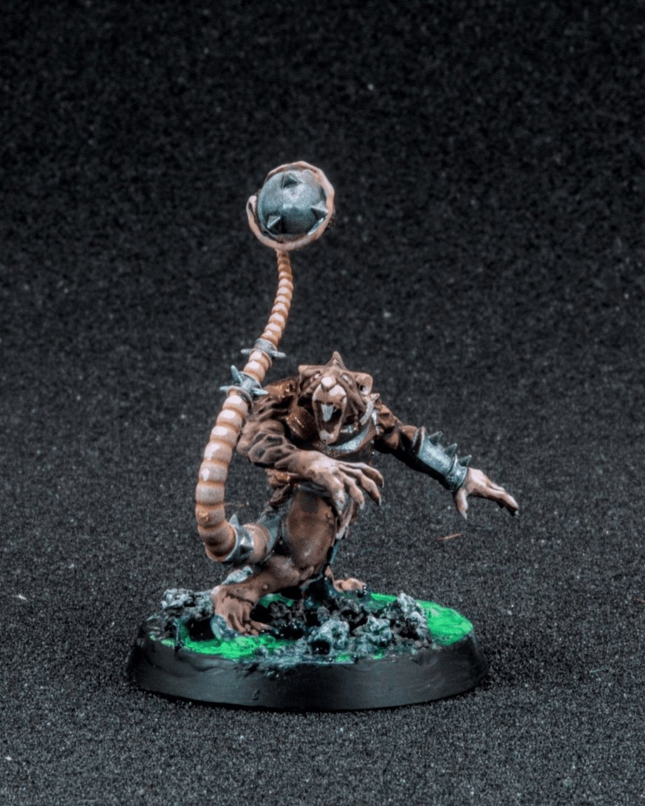
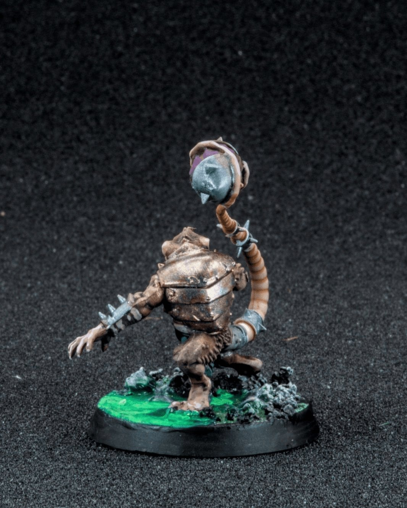
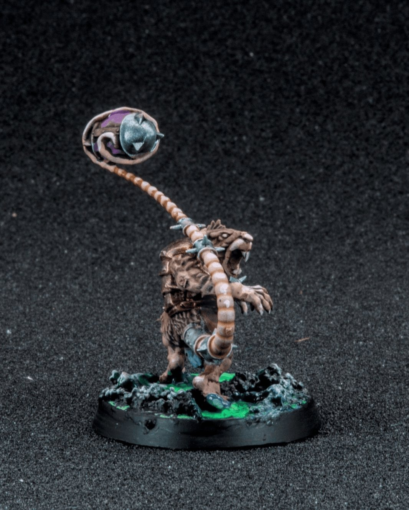
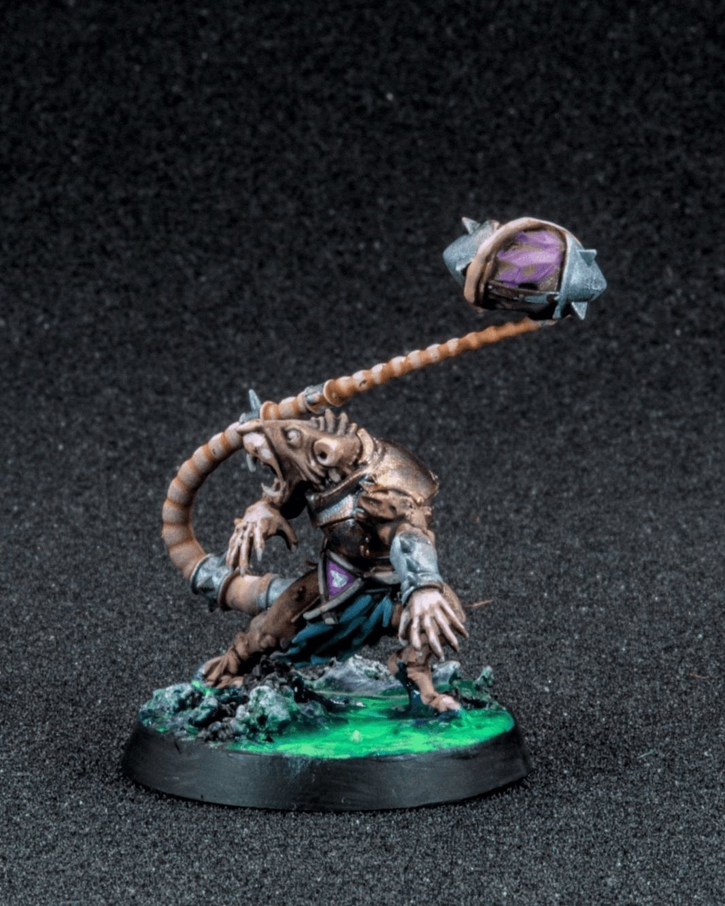

The Skaven passing game
The Skaven passing game is… optimistic. 🐀🏈
In the lore of Blood Bowl, Skaven teams actually have one of the better passing plays in the Old World, mostly because their Throwers are just clever enough (and expendable enough) to try it. While the rest of the ratmen swarm forward in a chaotic tide, the Thrower hangs back, clutching the ball and scanning for a Gutter Runner streaking downfield. Of course, this assumes the ball isn’t dropped, stolen, exploded, or eaten along the way… which is always a possibility when Skaven are involved.
For this little guy I leaned into that classic grimy Skaven palette, lots of dirty browns and desaturated metals so he feels like he crawled straight out of the undercity. The purple cloth was a fun way to break up the mud tones and tie him into the rest of the team colors, and I’m still having a blast with these toxic green bases. Nothing says “warpstone corruption” like glowing sludge bubbling up under your cleats… probably not great for ball handling though. 😅
@warhammerofficial @bloodbowlgame
#MiniaturePainting #BloodBowl #Warhammer #Miniatures #TabletopGames